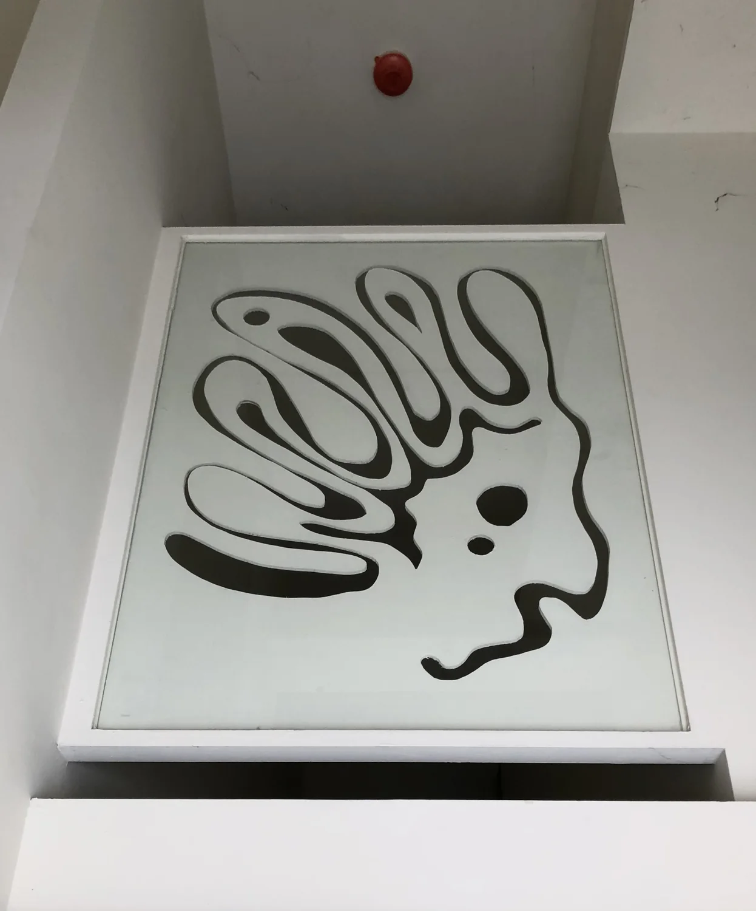
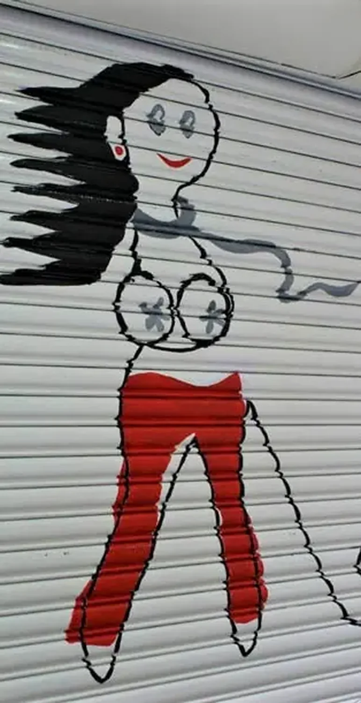
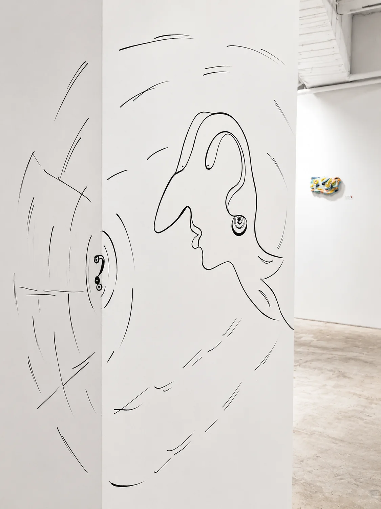

04.4 / 早期創作 Early Works
空間之始 Space Origin
在成為藝術家之前，生命已經悄悄長進空間裡。 Life had already grown into space.
空間中的憂鬱王子

門上的行走者

空間中的觀看

04.4 / 早期創作 Early Works
在成為藝術家之前，生命已經悄悄長進空間裡。 Life had already grown into space.


